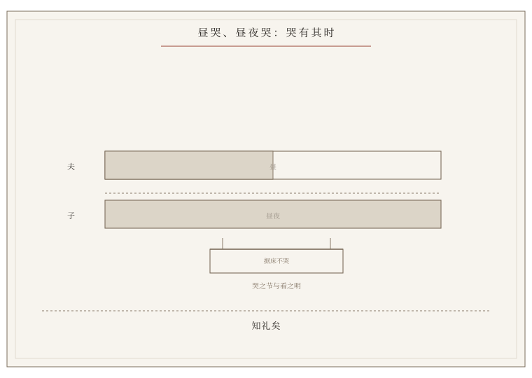

檀弓下 · 四·四十二 · 第 367 课
穆伯之丧，敬姜昼哭；文伯之丧，昼夜哭。孔子曰：「知礼矣。」文伯之丧，敬姜据其床而不哭，曰：「昔者吾有斯子也，吾以将为贤人也，吾未尝以就公室。今及其死也，朋友诸臣未有出涕者，而内人皆行哭失声。斯子也，必多旷于礼矣夫！」
说什么事：丈夫穆伯死，敬姜只在白天哭；儿子文伯死，她昼夜都哭。孔子说：她懂礼。而文伯之丧，敬姜靠着床不哭，说：从前我以这孩子将为贤人，我从不曾到公室去看他的行事。如今他死了，朋友诸臣没有一个落泪的，而妻妾们个个哭得失声。这孩子，必是在礼上疏薄得多了。
落在哪一层：以「哭」量礼，且以「不哭」量知。论哭有其时，不哭亦有其故。
为何编在此位：上节论位之被改，此节论哭之被节。一外一位，一内一情。
【经】穆伯之喪，敬姜晝哭；文伯之喪，晝夜哭。孔子曰：「知禮矣。」文伯之喪，敬姜據其床而不哭，曰：「昔者吾有斯子也，吾以將為賢人也，吾未嘗以就公室。今及其死也，朋友諸臣未有出涕者，而內人皆行哭失聲。斯子也，必多曠於禮矣夫！」
【注】喪夫不夜哭，嫌思情性也。／蓋見其有才藝。／未嘗與到公室，觀其行也。季氏，魯之宗卿，敬姜有會見之禮。／內人，妻妾。
【疏】「斯子也，必多旷于礼矣夫」——斯，此也。旷犹疏薄也。言此子平生为行，必疏薄于宾客朋友之礼，故宾客朋友未有感恋为之出涕者。此不哭者，谓暂时不哭，故上云「昼夜哭」是也。／案《家语》云：「文伯歜卒，其妻妾皆行哭失声。敬姜戒之曰：『吾闻好外者士死之，好内者女死之。今吾子早夭，吾恶其好内闻也。二三妇共祭祀者，无加服。』孔子闻之曰：『女智莫若公父氏之妇，知礼矣。』」与此不同者，彼戒妇人而成子之德，此论子之恶，各举一边，相包乃具。
穆伯 敬姜之夫，公父穆伯。
文伯 敬姜之子，公父文伯，名歜。
昼哭 只在日中哭。夜则不哭。
昼夜哭 昼夜皆哭，无时之哭。
据其床 凭靠着床。据，倚也。
就公室 到公室去。注云「未尝与到公室，观其行也」。
出涕 落泪。涕，泪。
内人 注「妻妾」。
行哭失声 哭着走动，且哭得失了声。
旷于礼 旷，疏薄也。谓于礼疏阔。
丈夫穆伯死，敬姜只在白天哭；儿子文伯死，她昼夜都哭。孔子说：「她懂礼。」文伯之丧，敬姜靠着床不哭，说：「从前我有这个儿子，我以为他将成贤人，我从不曾到公室去看他的行事。如今他死了，朋友诸臣没有一个落泪，而妻妾们个个哭得失声。这孩子，必是在礼上疏薄得多了！」
此章两层，一层是哭，一层是不哭。
哭的那一层，讲哭有其时；不哭的那一层，讲哭之外还有一件事可做：看。
一个母亲在丧子里最痛的时刻，做的是判断。
第一层 昼哭与昼夜哭：哭因名分而异 丧夫昼哭，丧子昼夜哭。
注说得直：「丧夫不夜哭，嫌思情性也。」——夜里哭夫，易涉情私之嫌。
同一个人，同一份痛，两样的哭法。礼在这里量的是「名分」，不是「情深」。
第二层 嫌：礼的避讳不是心虚 「嫌思情性」四字，今人或觉不近人情。
而礼之意在：不使一个无可辩白之处，留给旁人去揣度。
丧中之人最无力自辩，故礼先替他避。避不是承认有私，是不给人留话头。
第三层 据床不哭：从哭转到看 上言昼夜哭，此又言据床不哭，注云「暂时不哭」。
哭与不哭之间，是她把注意力从自己挪到别人身上：朋友诸臣有没有出涕？内人为什么失声？
第四层 以他人之泪验其子之礼 她判断的依据极冷：朋友诸臣未出涕，而内人皆失声。
前者说明他对士大夫无情，后者说明他对妻妾过宠。一冷一热，正见其「多旷于礼」。
疏解「旷」为「疏薄于宾客朋友之礼」，甚确。一个人的礼，最见他不在场时的样子——看他人的眼泪流向哪里。
第五层 今日之用：哀中的判断 今人遭丧，多只被要求「节哀」，无人要求在哀中仍能看。
此节所示，是哀中犹有一种清明：在最痛处，仍能看清自己亲人的一生欠了什么。
此种清明不是说人无情，恰是至情之后的另一种承担。
与今日何干 凡遇丧亲，哭是应当的；而在哭的间隙仍能看清，是更难的礼。一个家之得失，往往就记在这一刻的眼神里。
| 左 | 右 |
|---|---|
| 穆伯之丧 | 昼哭 |
| 文伯之丧 | 昼夜哭 |
| 丧夫不夜哭 | 嫌思情性 |
| 据床 | 倚床 |
| 暂时不哭 | 非终不哭 |
| 朋友诸臣 | 未出涕 |
| 内人 | 妻妾失声 |
| 旷 | 疏薄 |
| 多旷于礼 | 子之失 |
画上下两段并列的横条：上段标「夫」，只左半填以淡影（示昼），右半留白；下段标「子」，整条填以淡影（示昼夜）。两段之下另画一张矮床的侧影，床沿一道横线，床上无人，只在床头画一小块折起的衣角。不画人物，不画泪痕。赭色只用在上段的左半条。
